데이터 과학
데이터 시각화(ggplot2, ggvis)
학습 목표 1
ggplot2팩키지로 데이터를 시각화한다.- 고난도 복잡한 시각화 산출물을
ggplot2팩키지를 활용하여 단계적으로 구축한다. - Figshare surveys.csv, mammals data 데이터를 활용하여 시각화를 실습한다.
ggplot2로 시각화를 하는 이유
R에 기본적으로 시각화를 위한 다양한 기능이 존재하지만, ggplot2가 기본으로 제공되는 R 시각화 기능 위에 더욱 강력한 기능을 제공한다. 기본적인 R 기능도 상대적으로 다른 소프트웨어 서비스나 제품과 비교가 되지 않을 정도록 강력하다. 이런 점에서 R은 참 겸손하다는 생각이 든다.
데이터 다운로드와 시각화 툴체인 준비
# read_csv로 csv 파일을 불러 읽어온다.
library(readr)
# 시각화를 위한 ggplot2 팩키지를 불러 읽어온다.
library(ggplot2)
# ggplot2에 입력데이터로 사용될 데이터를 전처리한다.
library(dplyr)
# 데이터를 불러온다.
surveys.dat <- read_csv("http://files.figshare.com/1919744/surveys.csv")figshare2 사이트에서 데이터를 가져온다. surveys.csv 데이터는 포획된 동물에 관한 측정정보가 담겨 있다.
시각화를 위한 데이터 전처리 과정
다운로드 받은 데이터에 대한 요약정보를 summary 함수를 사용해서 살펴본다.
summary(surveys.dat) record_id month day year
Min. : 1 Min. : 1.000 Min. : 1.00 Min. :1977
1st Qu.: 8888 1st Qu.: 4.000 1st Qu.: 9.00 1st Qu.:1984
Median :17775 Median : 6.000 Median :16.00 Median :1990
Mean :17775 Mean : 6.474 Mean :16.11 Mean :1990
3rd Qu.:26662 3rd Qu.: 9.000 3rd Qu.:23.00 3rd Qu.:1997
Max. :35549 Max. :12.000 Max. :31.00 Max. :2002
plot_id species_id sex hindfoot_length
Min. : 1.0 Length:35549 Length:35549 Min. : 2.00
1st Qu.: 5.0 Class :character Class :character 1st Qu.:21.00
Median :11.0 Mode :character Mode :character Median :32.00
Mean :11.4 Mean :29.29
3rd Qu.:17.0 3rd Qu.:36.00
Max. :24.0 Max. :70.00
NA's :4111
weight
Min. : 4.00
1st Qu.: 20.00
Median : 37.00
Mean : 42.67
3rd Qu.: 48.00
Max. :280.00
NA's :3266
1 단계 - 결측값 제거
데이터셋에 일부 결측정보가 summary 실행결과를 보여주고 있어, 이를 제거한다. 각 변수마다 결측치가 있어 이를 한땀 한땀 정성스럽게 결측정보를 제거하는 대신에 dplyr 파이프 연산자를 사용하여 일괄적으로 처리한다.
surveys.complete <- surveys.dat %>%
filter(species_id != "") %>% # species_id 결측값 제거
filter(!is.na(weight)) %>% # weight 결측값 제거
filter(!is.na(hindfoot_length)) # hindfoot_length 결측값 제거2 단계 - 미미한 자료 제거
개체수가 적은 종이 많아서, 개체수 기준 10 보다 적은 종은 제거하기로 한다. 먼저 group_by 함수로 개체종을 그룹으로 군집화하고, tally 함수로 각 종별로 개체수를 세고, 내부인자로 sort=TRUE 를 넣어서 내림차순으로 정렬한다.
species.counts <- surveys.complete %>%
group_by(species_id) %>%
tally(sort=TRUE)
tail(species.counts)FALSE Source: local data frame [6 x 2]
FALSE
FALSE species_id n
FALSE (chr) (int)
FALSE 1 PH 31
FALSE 2 PI 8
FALSE 3 RO 8
FALSE 4 OX 5
FALSE 5 PX 2
FALSE 6 RX 2
개체수가 10개 미만인 종을 제거하고, 시각화를 위한 기본 데이터셋 준비를 완료한다.
frequent.species <- species.counts %>%
filter(n >= 10) %>%
select(species_id)
surveys.complete <- surveys.complete %>%
filter(species_id %in% frequent.species$species_id)기본 R 시각화 기능 활용
weight를 예측변수 x 위치에 두고, 종속변수 hindfoot_length를 y에 두고 R 기본 시각화 산점도를 도식화해 보자.
plot(x = surveys.complete$weight, y = surveys.complete$hindfoot_length)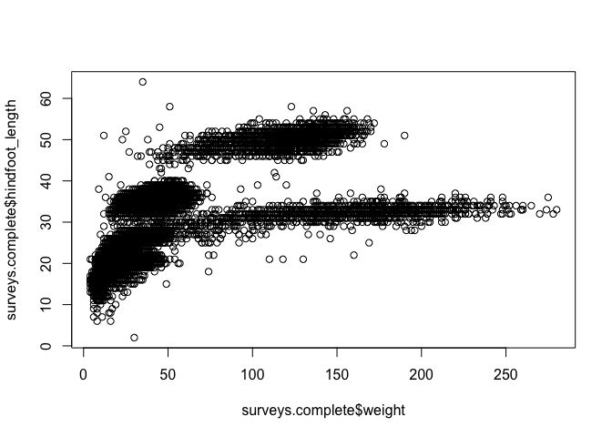
ggplot2 팩키지로 시각화
ggplot2를 사용해서 R 기본 내장된 시각화 기능을 대신하여 동일한 작업을 수행할 수 있다.
데이터프레임 데이터에서 복잡하고 정교한 시각화 산출물을 ggplot2 팩키지로 생성할 수 있다. 기본설정만으로 최소의 노력으로 출판 품질 시각화 산출물을 만들어 낼 수 있다.
ggplot2 시각화 산출물은 시각화 요소를 차곡차곡 추가해 나가면서 만들어 간다.
ggplot2 시각화 산출물은 다음 단계로 만들어 나간다:
data인자로 특정 데이터프레임과 플롯을 묶어 연결시킨다.
ggplot(data = surveys.complete)- 미적 요소를
aes로 정의해서, 플롯축에 데이터 변수를 매핑하고, 크기, 모양, 색상 등을 시각화한다.
ggplot(data = surveys.complete, aes(x = weight, y = hindfoot_length))- 데이터에 대한 시각적 표현(점, 선, 막대 등)을 하는데
geoms을 사용해서 플롯에 반영한다. 플롯에geoms를 추가하는데+연산자를 사용한다::
ggplot(data = surveys.complete, aes(x = weight, y = hindfoot_length)) +
geom_point()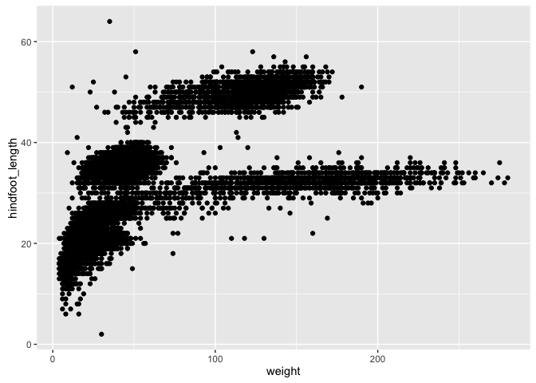
플롯 변경하기
- 투명도(transparaency, alpha)를 추가한다.
ggplot(data = surveys.complete, aes(x = weight, y = hindfoot_length)) +
geom_point(alpha=0.1)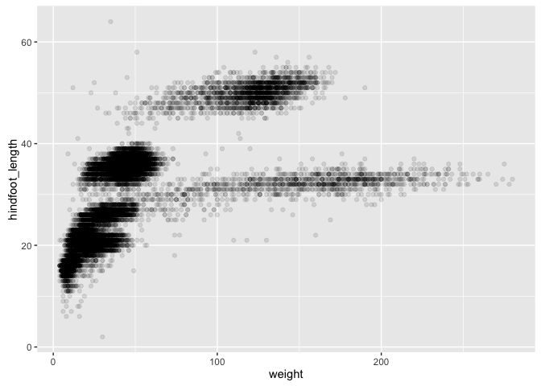
- 색상을 추가한다.
ggplot(data = surveys.complete, aes(x = weight, y = hindfoot_length)) +
geom_point(alpha=0.1, color = "blue")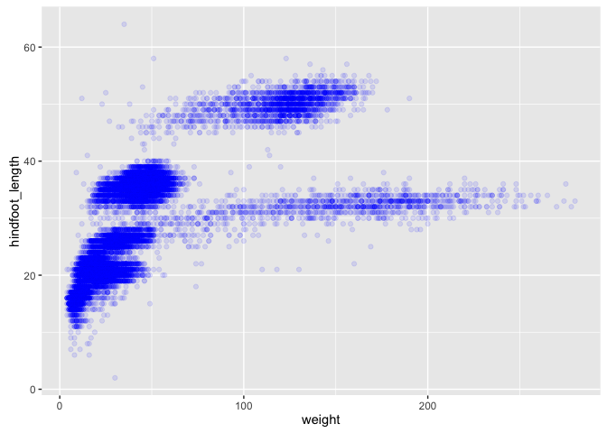
상자 그림
각 종별로 체중 분포를 시각화한다.
ggplot(data = surveys.complete, aes(x = species_id, y = weight)) +
geom_boxplot()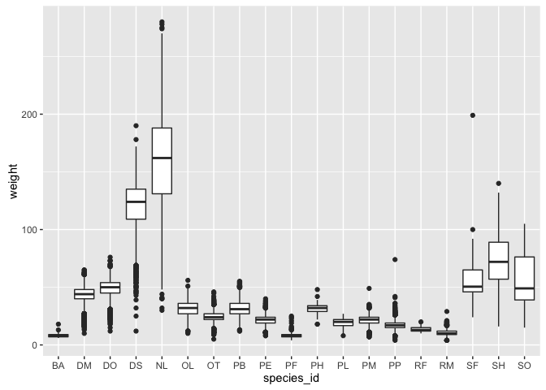
상자그림에 점을 추가해서, 특이한 관측점과 많이 관측된 측정값을 볼 수 있다.
ggplot(data = surveys.complete, aes(x = species_id, y = weight)) +
geom_jitter(alpha = 0.3, color = "tomato") +
geom_boxplot(alpha = 0)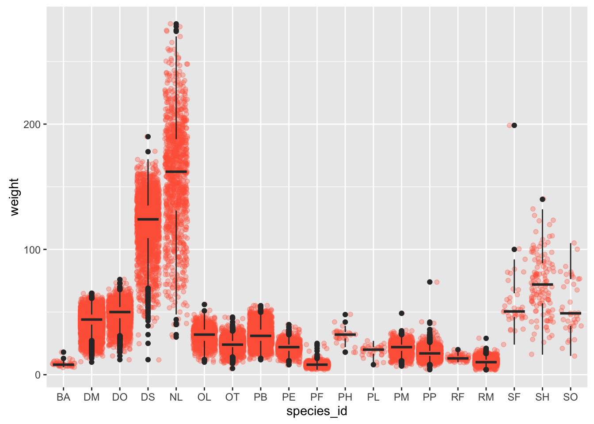
상기 시각화 산출물에서 상자그림이 지터 계층 위에 놓인 방식에 주목한다. geoms 순서를 조정하고, 투명도를 조절해 플롯에 계층을 쌓는 방식을 제어한다.
도전과제
hindfoot_length에 대한 상자그림을 생성한다.
시계열 데이터 시각화
각 종별로 년도별 개체수를 계산한다. 이 작업을 수행하기 위해서는 먼저 데이터를 그룹집단화하고, 각 그룹마다 해당 레코드 개수를 센다.
yearly.counts <- surveys.complete %>%
group_by(year, species_id) %>%
tallyx축에 연도, y 축에 개수를 놓고 직선으로 시간에 따라 경과한 정보를 시각화한다.
ggplot(data = yearly.counts, aes(x = year, y = n)) +
geom_line()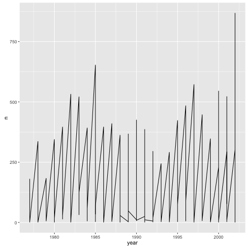
불행하게도, 상기 그래프는 원하는 바가 아닌데, 이유는 모든 종에 대해 데이터를 시각화하게 명령어를 전송했기 때문이다. species_id로 시각화한 데이터를 쪼갠 후에 ggplot 명령어로 시각화하게 한다.
ggplot(data = yearly.counts, aes(x = year, y = n, group = species_id)) +
geom_line()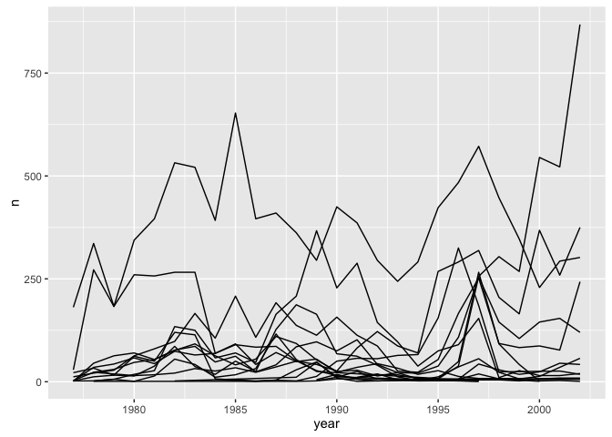
색상을 추가하게 되면, 그래프에서 개체를 식별하게 된다.
ggplot(data = yearly.counts, aes(x = year, y = n, group = species_id, color = species_id)) +
geom_line()
측면보여주기(faceting)
ggplot 에는 측면 보여주기(faceting) 라는 특수한 기능이 있어서, 특정 요인에 따라 그래프 하나를 다수 그래프로 쪼갤 수 있다. 예를 들어, 각 종마다 시계열 그래프를 별도로 도식화할 수 있다.
ggplot(data = yearly.counts, aes(x = year, y = n, color = species_id)) +
geom_line() + facet_wrap(~species_id)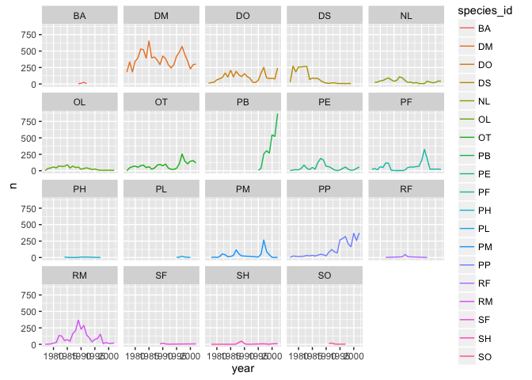
관측된 각 개체 성별에 따라 그래프에 직선을 쪼개고자 한다. 이 작업을 수행하려면, 성별로 그룹을 만들어 데이터프레임에 개수를 세어야 된다.
도전과제
- 데이터프레임을 필터링해서 “F” 혹은 “M” 값을 갖는 레코드만 갖도록 작업한다.
sex_values = c("F", "M")
surveys.complete <- surveys.complete %>%
filter(sex %in% sex_values)- 연도(
year), 개체 신원정보(special_id), 성(sex) 별로 그룹을 만든다.
yearly.sex.counts <- surveys.complete %>%
group_by(year, species_id, sex) %>%
tally- (개별 그래프 내부에) 성별로 쪼개는 측면보여주기 플롯을 생성한다.
ggplot(data = yearly.sex.counts, aes(x = year, y = n, color = species_id, group = sex)) +
geom_line() + facet_wrap(~ species_id)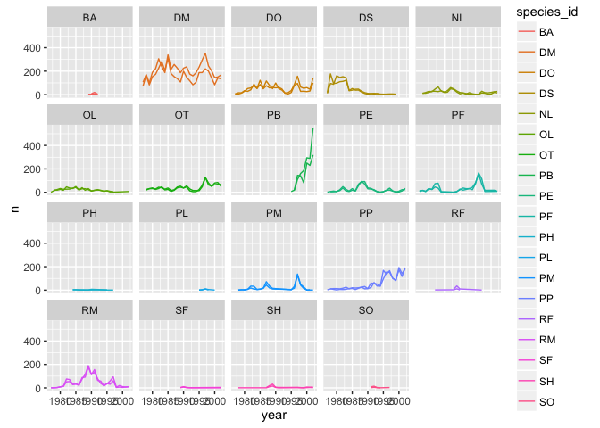
- 논문출판으로 흰색 배경이 좀더 가독성을 좋게 한다.
theme_bw()함수를 사용해서 흰색 배경을 적용한다.
ggplot(data = yearly.sex.counts, aes(x = year, y = n, color = species_id, group = sex)) +
geom_line() + facet_wrap(~ species_id) + theme_bw()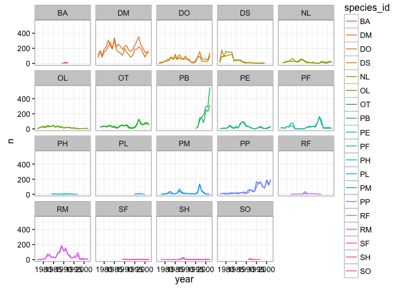
- 종대신에 성별로 색상을 입혀서 그래프 가독성을 좋게 만들 수 있다. (종은 이미 별도 그래프로 시각화되어서, 더 잘 식별하게 만들 필요는 없다.)
ggplot(data = yearly.sex.counts, aes(x = year, y = n, color = sex, group = sex)) +
geom_line() + facet_wrap(~ species_id) + theme_bw()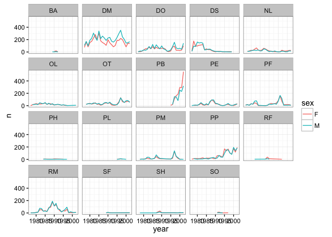
- 연도에 걸쳐 각 종별로 평균 체중을 시각화한다.
yearly.weight <- surveys.complete %>%
group_by(year, species_id, sex) %>%
summarise(avg_weight = mean(weight, na.rm = TRUE))
ggplot(data = yearly.weight, aes(x=year, y=avg_weight, color = species_id, group = species_id)) +
geom_line() + theme_bw()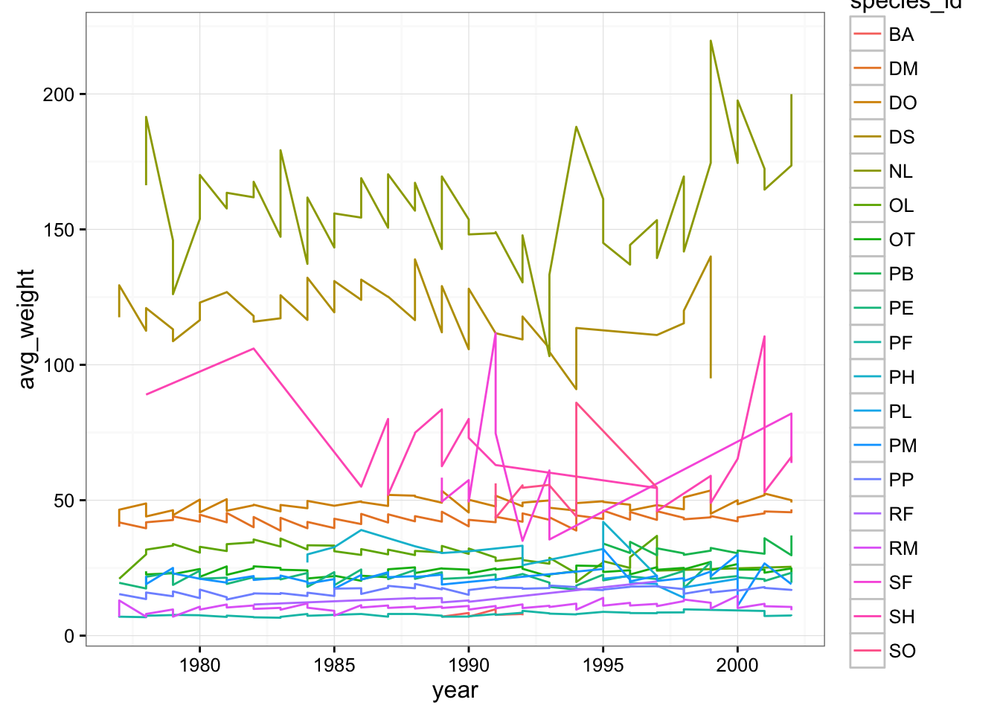
- 시각화를 왜 이런 단계를 밟아서 도식화 절차를 거친다고 생각하는가?
- 수컷과 암컷 체중이 상당히 차이가 나서 성별로 별도 시각화를 수행한다.
ggplot(data = yearly.weight, aes(x=year, y=avg_weight, color = species_id, group = species_id)) +
geom_line() + facet_wrap(~ sex) + theme_bw()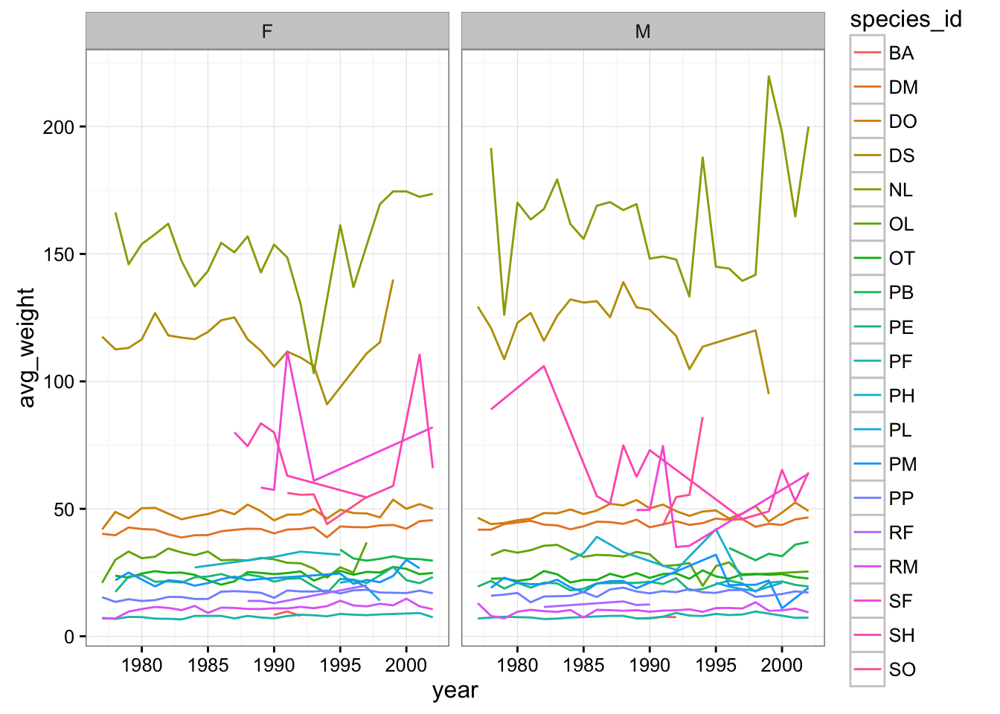 지금까지 시각화 결과가 상당히 좋았지만, 아직 출판하기에는 많이 부족하다. 시각화 산출물 결과를 향상할 수 있는 다른 방법은 무엇이 있을까? ggplot2 컨닝쪽지(cheat sheet)를 참조하고, 적어도 세가지 아이디어를 적어본다.
x축과 y축에 ‘year’와 ’n’ 보다 더 많은 정보를 전달하도록 변경하고, 그래프에 제목을 추가한다.
ggplot(data = yearly.sex.counts, aes(x = year, y = n, color = sex, group = sex)) +
geom_line() +
facet_wrap(~ species_id) +
labs(title = 'Observed species in time',
x = 'Year of observation',
y = 'Number of species') + theme_bw()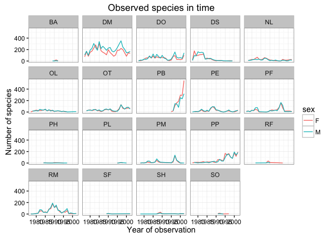
이제 좀더 나아져서 훨씬 더 많은 정보를 주는 x, y 축 명칭으로 바꿨지만, 가독성이 떨어지고 있다. 글자 크기를 변경하고 글자체도 변경한다.
ggplot(data = yearly.sex.counts, aes(x = year, y = n, color = sex, group = sex)) +
geom_line() +
facet_wrap(~ species_id) +
labs(title = 'Observed species in time',
x = 'Year of observation',
y = 'Number of species') +
theme(text=element_text(size=16, family="Arial")) + theme_bw()
조작을 한 다음에, x 축이 여전히 적절한 가독성을 전달하고 있지 않음을 볼 수 있다. 라벨 방향을 변경해서 서로 겹쳐지지 않도록 수평 혹은 수직방향으로 바꾼다. 90도 각도를 사용하거나, 대각선 방향으로 라벨방향을 변경하도록 적절한 각도로 바꾸는 실험을 진행한다.
ggplot(data = yearly.sex.counts, aes(x = year, y = n, color = sex, group = sex)) +
geom_line() +
facet_wrap(~ species_id) +
theme_bw() +
theme(axis.text.x = element_text(colour="grey20", size=12, angle=90, hjust=.5, vjust=.5),
axis.text.y = element_text(colour="grey20", size=12),
text=element_text(size=16, family="Arial")) +
labs(title = 'Observed species in time',
x = 'Year of observation',
y = 'Number of species')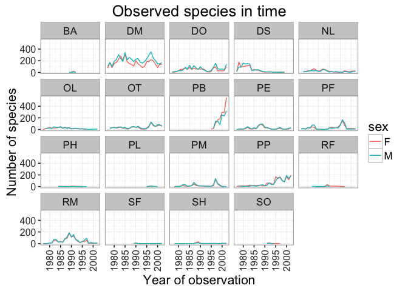
이제, 라벨을 키워서 가독성이 더 좋아졌지만, 개선할 여지는 남아 있다. 시간을 5분만 더 들여서 더 나은 시각화 산출물을 만들어 내도록 하나 혹은 두가지 작업을 시도해 본다. ggplot2 컨닝 쪽지를 사용해서, 상기 시각화 산출물에 적용할 영감을 받아본다.
다음에 몇가지 생각난 것이 있다:
- 선 두께를 변경할 수 있는지 살펴본다.
- 범례(legend) 명칭을 변경할 방법을 살펴본다. 범례 라벨은 어떤가?
- 외양을 좋게 하는데 다른 색상 팔레트를 사용한다. (http://www.cookbook-r.com/Graphs/Colors_(ggplot2)/)
완벽한 시각화 산출물이 도출되면, 선호하는 그림파일 형식으로 저장한다. 그림 폭과 높이를 지정해서 크기를 쉽게 변경한다.
ggsave("observed_species_in_time.png", width=15, height=10)